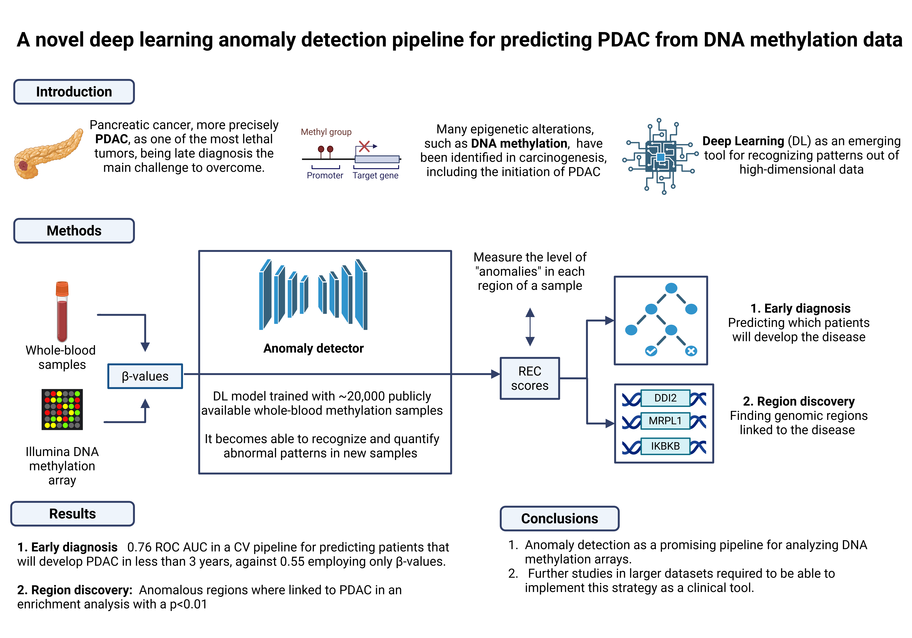

A Deep Learning Anomaly Detection Pipeline for PDAC Prediction
View on GitHubADMeth leverages Autoencoder architectures to learn the "normal" methylation patterns from healthy individuals. By identifying deviations (anomalies) in DNA methylation data, the tool can predict Pancreatic Ductal Adenocarcinoma (PDAC) up to 3 years before clinical diagnosis.
Achieved a 0.76 ROC AUC in predicting patients who develop PDAC within 3 years, significantly outperforming traditional raw β-value analysis (0.55).
Identifies specific genomic regions (e.g., DDI2, MRPL1) linked to disease biology through REC scores and functional enrichment analysis (p < 0.01).
DNA methylation is a key epigenetic mechanism in cancer biology. ADMeth proposes a novel method using anomaly detection to identify early and subtle patterns that are invisible to conventional bioinformatics. Trained on ~20,000 publicly available samples, this pipeline addresses the high dimensionality of methylation arrays and facilitates agnostic exploration across diseases.
This project has received funding from the EraPermed 2020 call IMAGene funded by the Instituto de Salud Carlos III (ISCIII) and the Scientific Foundation of the Spanish Association Against Cancer (FCAECC). The project also received funding from CIBERESP (ISCIII). We thank CERCA Programme, Generalitat de Catalunya for institutional support.